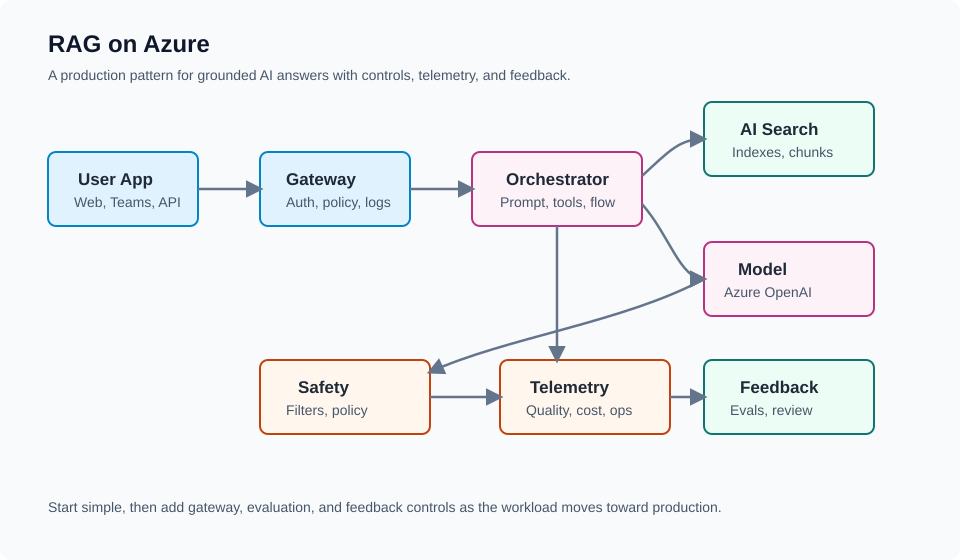
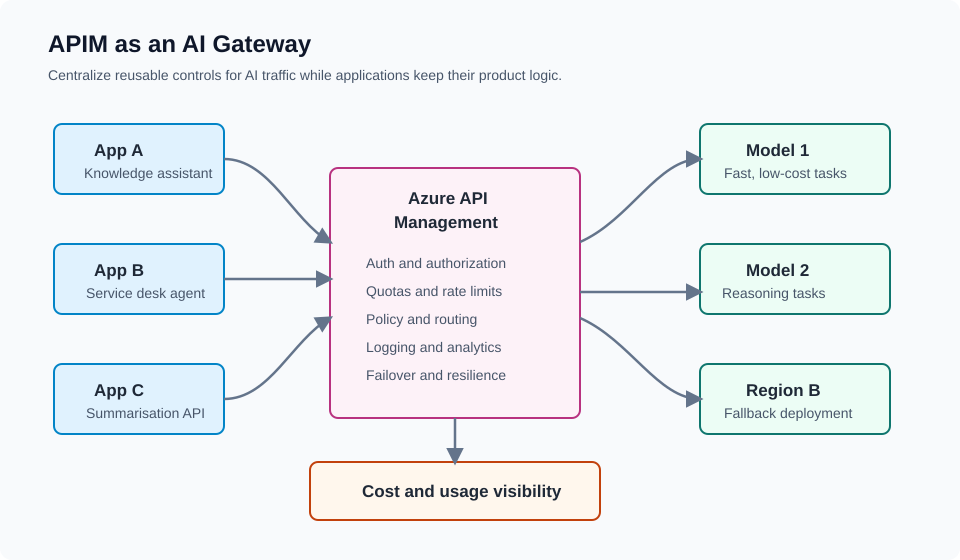

From prompt to production
The guide maps the full lifecycle: build, evaluate, deploy, monitor, govern, and optimise.
Open the guideDiagram-first field notes
AzureCraft captures reusable patterns for landing zones, AI workloads, governance, and GenAIOps so architects can move from idea to production with fewer unknowns.

Flagship guide
Move GenAI from prompt experiments into evaluated, governed, cost-aware Azure services.
The guide maps the full lifecycle: build, evaluate, deploy, monitor, govern, and optimise.
Open the guideIncludes a starter guide, crib sheet, facilitator notes, Q&A bank, and video plan.
View the video planDesigned for community sharing without customer names, private workshop content, or confidential material.
Review governance checklistLatest field notes
Short, practical posts for architecture conversations and reusable design decisions.
Why the site exists and how to use it as a field-notes library.
A pragmatic view of management groups, platform subscriptions, workload separation, and governance.
How private access, identity, monitoring, safety, and shared services shape production AI workloads.
Turn demo confidence into release confidence with practical eval sets and quality gates.
When Azure API Management helps with AI traffic control, observability, quotas, and routing.
Reusable diagrams
Architecture cards that can grow into full articles, decks, and customer-safe whiteboard sessions.
Management groups, platform subscriptions, policy, identity, network, and workload separation.

Application, gateway, orchestrator, search, model, safety controls, telemetry, and feedback.

Centralized policy, authentication, quotas, routing, logging, resilience, and cost visibility.
Downloadable assets
Reusable, public-safe material for learning sessions, architecture conversations, and first-pass customer discovery.